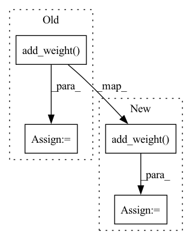

Pattern ID :21400

Before Change
self.supports_masking = False
def build(self, input_shape):
self.ww = self.add_weight(name="weight", shape=(input_shape[-1],), initializer=self.ww_init, trainable=True)
if self.use_bias:
self.bb = self.add_weight(name="bias", shape=(input_shape[-1],), initializer=self.bb_init, trainable=True)
super(ChannelAffine, self).build(input_shape)
After Change
ww_shape[ii] = input_shape[ii]
ww_shape = ww_shape[1:] // Exclude batch dimension
self.ww = self.add_weight(name="weight", shape=ww_shape, initializer=self.ww_init, trainable=True)
if self.use_bias:
self.bb = self.add_weight(name="bias", shape=ww_shape, initializer=self.bb_init, trainable=True)
super(ChannelAffine, self).build(input_shape)
In pattern: SUPERPATTERN
Frequency: 4
Non-data size: 4
Instances
Fragment ID: 68206400
Project Name: leondgarse/keras_cv_attention_models
Commit Name: 9c261ae8f4b53e97aeb858ddd8d0831c212480c7
Time: 2022-07-15
Author: leondgarse@gmail.com
File Name: keras_cv_attention_models/mlp_family/res_mlp.py
M Class Name: ChannelAffine
N Class Name: ChannelAffine
M Method Name: build(2)
N Method Name: build(2)
M Parent Class: keras.layers.Layer
N Parent Class: keras.layers.Layer
M File Name: keras_cv_attention_models/mlp_family/res_mlp.py
N File Name: keras_cv_attention_models/mlp_family/res_mlp.py
M Start Line: 23
M End Line: 23
N Start Line: 23
N End Line: 32
'>
Before Change
def build(self, input_shape):
super(LayerNormalization, self).build(input_shape)
if self.center:
self.beta = self.add_weight(shape=input_shape[-1], initializer="zero", name="beta")
if self.scale:
self.gamma = self.add_weight(shape=input_shape[-1], initializer="one", name="gamma")
def call(self, inputs, **kwargs):
After Change
shape = (input_shape[-1],)
if self.center:
self.beta = self.add_weight(
shape=shape, initializer="zeros", name="beta"
)
if self.scale:
self.gamma = self.add_weight(
shape=shape, initializer="ones", name="gamma"
)
'>
Fragment ID: 68206401
Project Name: xv44586/toolkit4nlp
Commit Name: ec9dc692312a159d035172e85200bd652121d061
Time: 2020-07-18
Author: xv44586@gmail.com
File Name: toolkit4nlp/layers.py
M Class Name: LayerNormalization
N Class Name: LayerNormalization
M Method Name: build(2)
N Method Name: build(2)
M Parent Class: Layer
N Parent Class: Layer
M File Name: toolkit4nlp/layers.py
N File Name: toolkit4nlp/layers.py
M Start Line: 145
M End Line: 150
N Start Line: 168
N End Line: 202
'>
Before Change
super(BiasLayer, self).__init__(**kwargs)
def build(self, input_shape):
self.bb = self.add_weight(name="bias", shape=(input_shape[-1]), initializer="zeros", trainable=True)
super(BiasLayer, self).build(input_shape)
def call(self, inputs, **kwargs):
return inputs + self.bb
After Change
axis = self.axis if isinstance(self.axis, (list, tuple)) else [self.axis]
for ii in axis:
bb_shape[ii] = input_shape[ii]
self.bb = self.add_weight(name="bias", shape=bb_shape, initializer="zeros", trainable=True)
super(BiasLayer, self).build(input_shape)
def call(self, inputs, **kwargs):
return inputs + self.bb
'>
Fragment ID: 68206402
Project Name: leondgarse/keras_cv_attention_models
Commit Name: 61cf6be193421f7f2959d9adcae8541416d61ff1
Time: 2021-09-13
Author: leondgarse@gmail.com
File Name: keras_cv_attention_models/volo/volo.py
M Class Name: BiasLayer
N Class Name: BiasLayer
M Method Name: build(2)
N Method Name: build(2)
M Parent Class: keras.layers.Layer
N Parent Class: keras.layers.Layer
M File Name: keras_cv_attention_models/volo/volo.py
N File Name: keras_cv_attention_models/volo/volo.py
M Start Line: 196
M End Line: 196
N Start Line: 197
N End Line: 204
'>
Before Change
def build(self, input_shape):
super(LayerNormalization, self).build(input_shape)
if self.center:
self.beta = self.add_weight(shape=input_shape[-1], initializer="zero", name="beta")
if self.scale:
self.gamma = self.add_weight(shape=input_shape[-1], initializer="one", name="gamma")
def call(self, inputs, **kwargs):
After Change
shape = (input_shape[-1],)
if self.center:
self.beta = self.add_weight(
shape=shape, initializer="zeros", name="beta"
)
if self.scale:
self.gamma = self.add_weight(
shape=shape, initializer="ones", name="gamma"
)
'>
Fragment ID: 68206403
Project Name: xv44586/toolkit4nlp
Commit Name: ba15a1fea86a59adc2ae7b90c29d5b0d7b4d090c
Time: 2020-07-16
Author: mingming.xu@zhaopin.com.cn
File Name: toolkit4nlp/layers.py
M Class Name: LayerNormalization
N Class Name: LayerNormalization
M Method Name: build(2)
N Method Name: build(2)
M Parent Class: Layer
N Parent Class: Layer
M File Name: toolkit4nlp/layers.py
N File Name: toolkit4nlp/layers.py
M Start Line: 145
M End Line: 150
N Start Line: 168
N End Line: 202